因果推断
概述
机器学习到底在学什么？从数据中能够得到什么？如何保证得到的结论是正确的？要解决这些问题，就要跳出简单的相关性分析，而要深入到因果性分析。例如，我们可以收集到是否吸烟和是否得肺癌得数据，然后使用分类模型预测肺癌的患病率，或者计算处吸烟和肺癌具有相关性来说服公众。然而，我们为什么不根据肺癌预测吸烟率？显然这是一个无意义的研究目标。而我们为什么知道它无意义，以至于“显然”呢？得到这个结果的前提，是因为我们都确信吸烟有可能导致肺癌，而肺癌并非导致吸烟的原因。无论是获得在吸烟条件下得肺癌的概率，还是证明吸烟和肺癌具有相关性，我们得到的结论都是靠常识去推断的。小而言之，这样需要人参与推理的模型并非完美的算法，如同用算盘计算之于用计算器计算；大而言之，我们并非总有自信认为从相关性中就能得到一些正确的结论，它们并非像吸烟和肺癌的例子那样简单，比如下面的例子。
Simpson问题
某医院统计出某药物对患者的治疗效果，结果如下表所示。
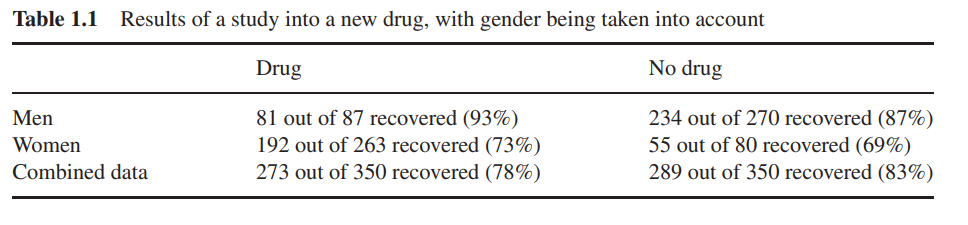
从最终结果来看，不使用药物的治愈率比使用的高出5%，这是否说明不使用药物比较好？但是如果把性别分开，则发现，在男性中使用药物的治愈率比不使用的高6%，女性中高4%，那么这说明使用药物比较好？导致这一分歧的原因在于，女性整体治愈率明显低于男性，且女性药物使用率明显高于男性，最终在使用药物组中占主导作用的是女性中使用药物的群体，在不使用药物组占主导作用的是男性中不使用药物的群体，而男性中不使用药物的群体把不使用药物组最终的治愈率抬高了。用符号描述就是： \[ \frac{a_1}{b_1}>\frac{a_2}{b_2},\frac{a_3}{b_3}>\frac{a_4}{b_4}\not\equiv \frac{a_1+a_3}{b_1+b_3}>\frac{a_2+a_4}{b_2+b_4} \] 试想，我们面对存在这种关系的数据集时，可以得到高准确率的预测是否治愈的模型，也可以从多个特征中选出包括使用药物和性别的特征子集，然而这些能够给出药物是否具有提高治愈率的结论吗？不能，这个问题已经不属于相关性问题了，而是深入到因果性。我们需要更深入的算法来解决这类问题。
相关性与因果关系
相关性是反映因果关系的表面现象。因为存在变量间因果关系，所以它们具有相关性。反过来说，具有相关性的变量是否一定有因果关系？这个问题很有争议。在此需要给出一些定义，来说明为什么我认为具有相关性的变量必定具有因果关系。
稳定数据：如果收集到的数据长期符合某一确定分布，则称其为稳定数据。
相关性：对于稳定数据中的某些变量，如果它们不独立，则称它们具有相关性。
因果性：如果强制改变变量\(A\)的值会伴随着变量\(B\)的值的变化，而强制改变变量\(B\)的值不会伴随变量\(A\)的值的变化，则称\(A\)和\(B\)具有因果性，\(A\)是因，\(B\)是果。在有向无环图（Directed Acyclic Graph，DAG）中，用节点表示变量，有向边从因节点指向果节点。
因果关系：变量\(A\)和\(B\)具有因果关系的充分条件有以下情况：
- \(A\)和\(B\)具有因果性
- \(A\)和\(B\)共因，即\(A\)和\(B\)是同一因节点的后代。
基于上述定义，具有因果关系和具有相关性是充要的。例如，下图展示了阿美莉卡在科技领域投入和自杀人数的数据。
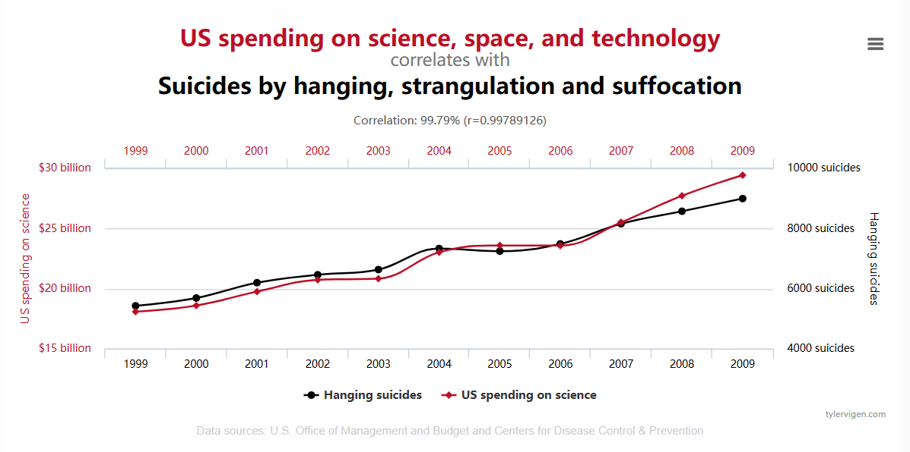
（更多的例子见Spurious Correlations (tylervigen.com)）
上面的数据不符合稳定数据的定义，因为样本数量过少，但是，如果把每一天的数据都统计出来，连续10年，如果还有这样强的相关性，那么我们就不得不相信科技领域投入和自杀人数之间存在因果关系（比如开展了Frankenstein研究）。
另一种情况是，互因关系，我们不能用DAG来表示这些节点的关系。例如，在一个生态系统中，狼的数量增加->羊的数量减少->狼的数量减少->羊的数量增加->狼的数量增加。狼的数量和羊的数量不能用DAG表示。本文将不讨论这种情况，只讨论能够用DAG表示的关系。
基础内容
用大写字母表示随机变量，小写字母代表随机变量的取值，公式中出现的\(P(X)\)表示对\(X\)的所有取值均成立，\(P(X=x)或\)\(P(x)\)表示\(X=x\)的概率。\(P(X=x|Y=y)=P(x|y)\)表示在\(Y=y\)时\(X=x\)的概率。\(P(x_1,x_2,...x_n)\)表示\(X_1=x_1\wedge X_2=x_2,...\wedge X_n=x_n\)的概率。
条件独立
在随机变量\(C\)的取值确定的情况下\((C=k)\)，随机变量\(A\)与\(B\)独立，则\(A\), \(B\)关于\(C=k\)条件独立，即：
\(A\perp B|C=k\iff P(A|C=k)P(B|C=k)=P(AB|C=k)\)
若对任意\(C\)的取值均有上述关系，则\(A\), \(B\)关于\(C\)条件独立，记为\(A\perp B|C\)
上式等价于 \[ P(B|C=k)=P(B|C=k,A)\\ P(A|C=k)=P(A|C=k,B) \] \(A\), \(B\)关于\(C\)条件独立与\(A\), \(B\)独立既不充分也不必要，比如设\(A\)：第一次扔硬币正面朝上，\(B\)：第二次扔硬币正面朝上，\(C\)：两次均正面朝上。此时\(A\)与\(B\)独立，但是\(P(A|C=1)=P(B|C=1)=P(AB|C=1)=1\)，\(A\)，\(B\)关于\(C\)不独立。另一方面，设\(A=B=C\)，此时有\(P(A|C)P(B|C)=P(AB|C)=1\)，但\(P(A)P(B)=P(A)^2\neq P(AB)=P(A)\)
链式法则
对于随机变量\(X_1,X_2...X_n\)，当它们的取值为\(X_i=x_i\)时，有 \[ P(x_1,x_2,...x_n)=P(x_1)P(x_2|x_1)...P(x_n|x_1,x_2...x_{n-1}) \] 由条件概率定义即可证
带函数的联合概率
设随机变量\(A\),\(B\),\(C\)满足\(C=f(A,B)\), 则 \[ P(C=c,A=a)=P(B=u_b,A=a) \] 其中\(u_b\)是满足\(f(a,u_b)=c\)的\(B\)的取值集合
概率模型（伪因果模型）
朴素贝叶斯
将分类任务看作是在给定特征的条件下目标取某个值的概率，最终要得到\(P(y|x_1,x_2,...x_n)\)
由条件概率关系（贝叶斯公式） \[ P(y|x_1,x_2,...x_n)=\frac{P(x_1,x_2,...x_n|y)P(y)}{P(x_1,x_2,...x_n)} \] 其中，\(P(y)\)可以由\(Y=y\)的频率得到，在分类任务中，一般目标值的种类数远小于样本数，因此可以这么做。而\(P(x_1,x_2,...x_n|y)\)和\(P(x_1,x_2,...x_n)\)就不能这样了，这时特征的组合过多，设想每个特征都是二值的，那么就有\(2^n\)种组合，未必找得到符合这种组合的样本。因此，需要做亿点简化，把特征均看作独立的，并且特征关于目标也都是独立的。于是把上式简化成 \[ P(y|x_1,x_2,...x_n)=\frac{P(x_1|y)P(x_2|y)...P(x_n|y)P(y)}{P(x_1)P(x_2)...P(x_n)} \] 这样\(P(x_k|y)\)，\(P(x_k)\)都可以用频率得到了。
毫无疑问，这种做法过于暴殄天物，数据集特征越多，特征冗余就越多，最后效果越不好。
贝叶斯网络
朴素贝叶斯的做法把特征间的关系完全忽略了。贝叶斯网络则没有这么暴力，虽然还是做了一些简化。 需要指出，贝叶斯网络本质上是描述随机变量相关性的关系图，贝叶斯网络中的箭头方向仅代表了特征的加入顺序，箭头连接的两个变量是相关的，但不一定具有因果性。
手动的贝叶斯网络的算法流程如下。（贝叶斯网络的构建属于NP问题，因此另一种方式是用群优化算法搜索）显然通过这种方式得到的是有向无环图（Directed acyclic graph, DAG）。
Input: Random variables \(V_1,V_2...V_n\) Output: A directed acyclic graph which describes the correlation among variables
- for \(i\) in \(1,2...n\) do
- Add \(V_i\) into the graph, if \(V_i\) has correlation with any other nodes(which have a smaller order than \(V_i\)) in the graph, add a directed edge between these two nodes with \(V_i\) as the end point. For example, if \(V_k(k<i)\) has a correlation with \(V_i\), then add a directed edge from \(V_k\) to \(V_i\)
- endfor
- Compute the probability table for every point.
条件独立假设
可以看到，在贝叶斯网络中的相关性是手动添加的，手动的好处是让网络结构更简单。用群优化算法也可以得到一个贝叶斯网络，能这样做的原因是在贝叶斯网络中只考虑变量之间的相关性，而相关性可以直接由频率给出。例如下图：
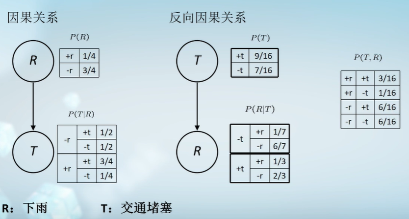
左右两图描述了同一件事，即最右边的概率表。最右边的概率表直接从数据集中得出。这两个结构孰是孰非，站在上帝视角来看是左边描述了正确的因果关系。然而，我们实际上从数据集中只得能得到概率表，也就只能判断出下雨和交通堵塞存在相关性。如何得到因果性会在下文讨论，在此先弄明白如何计算概率表。考虑一个\(n\)个变量组成的贝叶斯网络，若要计算\(P(v_1,v_2,...v_n)\)，则由链式法则计算： \[ P(v_n)=\prod _{i=1}^{n}P(v_i|v_1,...v_{i-1}) \]
在贝叶斯网络中，若存在关系\(A\rightarrow B\rightarrow C\)，则假设\(A\)与\(C\)关于\(B\)条件独立，即假设： \[ v_i\perp \{v_1,...v_{i-1} \} \cap {\neg parent(v_i)}|parent(v_i) \] 于是 \[ P(v_i|v_1,...v_{i-1})=P(v_i|parent(v_{i}))\\\ P(v_n)=\prod _{i=1}^{n}P(v_i|parent(v_{i}))\tag{1} \] 一般的贝叶斯网络节点的父节点数远小于总节点数，因此计算\(P(v_i|parent(v_{i}))\)是可行的。条件独立假设仍然是一种简化，但比起朴素贝叶斯保留了更多的特征关系信息。
因果模型
在贝叶斯网络之中，做了条件独立假设，这忽略了特征间的一些关系。关系\(A\rightarrow B\rightarrow C\)中未必\(A\)与\(C\)关于\(B\)独立。在贝叶斯网络的手动构建算法里，后加入的节点若与网络中的节点存在相关性，则连一条边，也就是在关系\(A\rightarrow B\rightarrow C\)中，\(A\)与\(C\)独立，但未必关于\(B\)条件独立。这在第一节已经讨论过了。然而，如果我们可以做到构建一个符合条件独立性的贝叶斯网络，那么这个网络就可以突破假设的局限性了，这是可以做到的，即通过因果性构建贝叶斯网络。因果性DAG中，因节点的取值会影响果节点的取值。（但不是必然影响，因为隐变量的存在）
隐变量(exogenous variables)
有一些变量对数据造成了影响， 然而它们由于某些缘故并没有被记录为特征，这些变量即隐变量。因为隐变量的存在，我们无法确保DAG中的一个因的取值必定对应一个果的取值，而是因的取值和隐变量的取值共同决定了果的取值。假设隐变量与观察到的变量独立。
定义
因果关系可以看作一个函数，因作为自变量，果作为因变量，即一个因或一些因的取值必定对应一个果的取值。基于这一定义，因果性DAG节点之间的关系有以下3种基本情况。（在因果性DAG中也可以运用以下关系，事实上在历史上下列关系首先出现在非因果性DAG中，只是在因果性DAG中可以根据定义严格证明以下内容，而在非因果性DAG中其仅作为简化计算方式而不具有严格数学意义）
- 链式：\(A\rightarrow B\rightarrow C\)
- 共因：\(A\leftarrow B\rightarrow C\)
- 共果：\(A\rightarrow B\leftarrow C\)
在链式关系中，根据因果性的定义，设\(A=f(U_A),B=g(A,U_B),C=h(B,U_C)\)，其中\(U_A,U_B,U_C\)为隐变量的集合。
1）若\(A=a\)时，\(P(B=b)=0\)，则\(A=a\)与\(B=b\)不独立。否则有 \[ \begin{aligned} P(B=b|A=a)&=P(g(A,U_B)=b|A=a)=\frac{P(g(A,U_B)=b,A=a)}{P(A=a)}\\ &=\frac{P(A=a,U_B=u_b)}{P(A=a)}=P(U_B=u_b) \end{aligned} \]
其中\(g(a,u_b)=b\), \(u_b\)是满足这个关系的所有\(U_B\)的取值集合。
2）若\(P(B=b)=P(U_B=u_b)\), 即仅当\(U_B=u_b\)时\(B=b\)成立，则\(A=a\)与\(B=b\)独立
3）否则\(P(B=b|A=a)\neq P(B=b)\). 综合以上情况，仅当\(B\)的值完全由\(U_B\)决定时，才有\(A\)与\(B\)独立。类似地，\(B\)与\(C\)，\(A\)与\(C\)可能对于某些取值不独立，某些取值独立。而\(A\)与\(C\)关于\(B\)必然条件独立，因为：
1） 若\(P(B=b|A=a)=0\), 则\(P(A=a,B=b)=0\) , 则有\(P(A=a|B=b)P(C=c|B=b)=P(A=a,C=c|B=b)=0\), \(A\perp C|B\). 同理若\(P(C=c|B=b)=0\), 有\(A\perp C|B\).
2）否则，仿照上例有 \[ \begin{aligned} P(A=a,C=c|B=b)&=\frac{P(A=a,B=b,C=c)}{P(B=b)}\\ &=\frac{P(A=a,B=b,U_C=u_c)}{P(B=b)}=\frac{P(A=a,U_B=u_b,U_C=u_c)}{P(B=b)}\\ P(A=a|B=b)&=\frac{P(A=a,U_B=u_b)}{P(B=b)}\\ P(C=c|B=b)&=P(U_C=u_c) \end{aligned} \] 于是 \[ P(A=a,C=c|B=b)=P(A=a|B=b)P(C=c|B=b) \] 综上，\(A\)与\(C\)关于\(B\)必然条件独立。直观来看，当我们确定了\(B\)的值时，\(C\)的值大抵可以确定，但我们并不确定\(A\)的哪一个取值导致了\(B\)的这一取值。
可以证明，在共因关系中，\(A\)与\(B\)，\(C\)与\(B\)，\(A\)与\(C\)可能不独立，\(A\)与\(C\)必然关于\(B\)条件独立。这一点也好理解，因为给定\(B\)之后，\(A\)和\(C\)的值仅由隐变量决定。
在共果关系中，\(A\)与\(B\)，\(C\)与\(B\)可能不独立，\(A\)与\(C\)必然独立，\(A\)与\(C\)必然关于\(B\)及其子节点条件不独立。可以考虑以下场景：
丢两次硬币，若至少有一次正面朝上，则铃响。设\(X\): 丢硬币第一次 \(Y\): 丢硬币第二次 \(Z\): 铃响，符合共果关系\(X\rightarrow Z\leftarrow Y\) 则\(X,Y,Z\)概率分布如下：
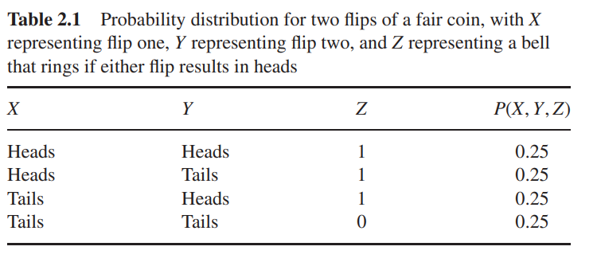
可以得到\(P(X=Head|Z=1)=\frac{2}{3},P(X=Head|Y=Head,Z=1)=\frac{1}{2}\). 在得知了\(Y\)正面向上后，我们认为\(X\)正面向上的概率降低了。现在假设听到铃后，有一个不靠谱的掌铃人会告诉我们铃响，在铃响时100%报告，而铃不响时有50%的概率报告。设\(W\): 收到报告，这时的因果图为：
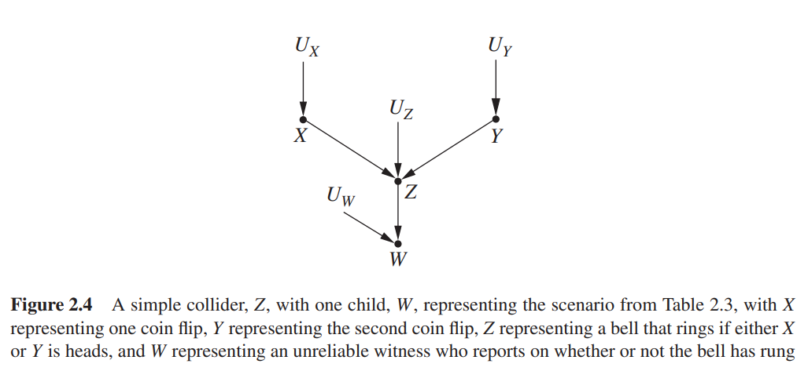
那么\(X,Y,W\)概率分布如下：
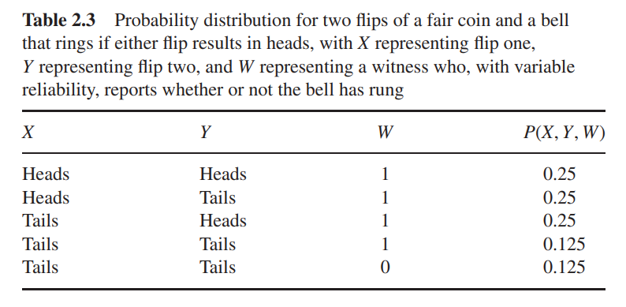
可以得到\(P(X=Head|W=1)=\frac{0.5}{0.875},P(X=Head|Y=Head,W=1)=0.5\)，可见\(X\)与\(Y\)关于\(W\)条件不独立。
有向分离(directed separation)
有向分离用于判断两个变量在给定另一些变量的情况下是否相互独立。其总结了上面3种节点关系。
- 如果两个变量\(X\)和\(Y\)被变量集合\(Z\)阻断，则\(X\perp Y|Z\). 其中阻断包含以下两种情况：
- 从\(X\)到\(Y\)的路径\(p\)包含链式关系\(A\rightarrow B\rightarrow C\) 或共因关系\(A\leftarrow B\rightarrow C\)，且\(B\)在\(Z\)中；
- 从\(X\)到\(Y\)的路径\(p\)包含共果关系\(A\rightarrow B\leftarrow C\) ，且\(B\)及其子节点不在\(Z\)中。
干涉(Intervening)
“The difference between intervening on a variable and conditioning on that variable should, hopefully, be obvious. When we intervene on a variable in a model, we fix its value. We change the system, and the values of other variables often change as a result. When we condition on a variable, we change nothing; we merely narrow our focus to the subset of cases in which the variable takes the value we are interested in. What changes, then, is our perception about the world, not the world itself.” ---Chapter 3.1 of Casual Inference in Statistics
在吸烟和肺癌的例子中，我们不能通过相关性判断吸烟和肺癌的因果性。为了判断因果性，可以考虑以下场景：找一群原先不吸烟的人，强制他们吸烟，观测患肺癌的概率。再找一群没有肺癌的人，让他们患肺癌，观测吸烟的概率。设\(X\): 吸烟，\(Y\)：患肺癌，前一种情况下，患肺癌的概率高于肺癌在人群中的概率，\(P(Y=1|do(X=1))\neq P(Y=1)\)， 而后一种情况，吸烟的概率等于人群中吸烟的概率，\(P(X=1|do(Y=1))=P(X=1)\). 这样的结果说明，吸烟是导致肺癌的原因，而肺癌不是导致吸烟的原因。这里的\(do\)算子的含义是：我们控制了变量\(X\)的值，而不引起任何隐变量的值的改变，否则，在因果DAG中必须将发生改变的隐变量作为变量节点。（原文表述：It is worth noting here that we are making a tacit assumption that the intervention has no “side effects,” that is, that assigning the value x for the variable X for an individual does not alter subsequent variables in a direct way. For example, being “assigned” a drug might have a different effect on recovery than being forced to take the drug against one’s religious objections. When side effects are present, they need to be specified explicitly in the model. 这里的"direct way"说的比较模糊）需要注意，\(P(Y|do(X=1))\not\equiv P(Y|X=1)\). 当我们强制令\(X=1\)时，\(X\)的父节点对它就没有影响了，在因果DAG中\(X\)的入边全部消失；而\(X\)的值没有强制改变时，\(X\)的父节点可以对\(X\)及\(Y\)同时造成影响。例如，设\(X\): 冰糕店销量增加，\(Y\): 犯罪率升高，\(Z\): 天气变热，这时存在因果关系\(X\leftarrow Z \rightarrow Y\)，因果DAG如下图
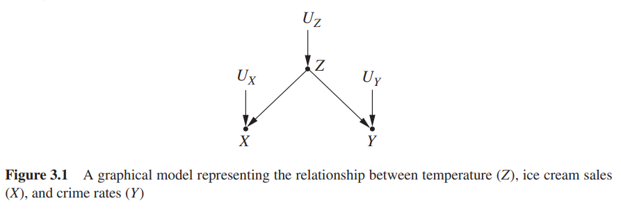
如果我们采取措施让\(X=0\)，例如关闭所有冰糕店，那么\(Z\)就无法再影响到\(X\)，因果DAG变为下图
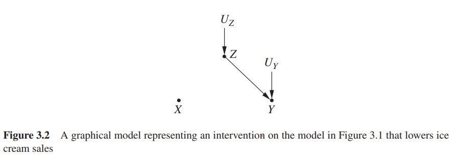
总之，干预一个变量等价于在因果DAG中让它的入边全部消失，不再作为果。所以仅当\(X\)是孤儿节点时，有\(P(Y|do(X=1))= P(Y|X=1)\)
干预与观测
只要能得到\(P(Y=y|do(X=x))\)，我们就可以得到完美的因果DAG了。上面的例子给出了判断因果性的方法，美中不足的是，现实中我们并没有可能进行这种实验。为表区分，将直接控制变量的这一种方式称为干预(Intervention). 干预可以直接得到\(P(Y=y|do(X=x))\). 退而求其次，我们能不能尝试从相关性数据中找出因果关系？前面提到，对于稳定数据，相关性可以反映因果关系。如果获得了稳定数据，我们可以通过观测(Observation)来判断因果关系的强弱，来近似地计算\(P(Y=y|do(X=x))\).
平均因果作用(Average casual effect, ACE)
还要说明一点，因为隐变量的存在，我们从观测的数据中无法得到决定性的因果关系，而只能计算变量之间的因果性强弱。一种直接的想法是，控制\(X\)的取值，在不同\(X\)取值下观测\(Y\)的值的差异，例如下面的例子
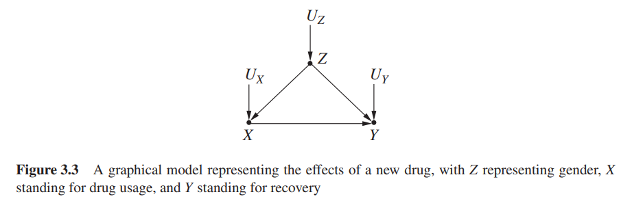
为了衡量\(X\)对\(Y\)的因果性强弱，考虑计算使用药物时的治愈概率与不使用药物时的治愈概率之差： \[ ACE=P(Y=1|do(X=1))-P(Y=1|do(X=0)) \] 下面尝试计算\(P(Y=y|do(X=x))\).
校正公式(Adjustment Formula)
使用药物的例子中，当\(X\)的取值被控制后，因果DAG变为下图
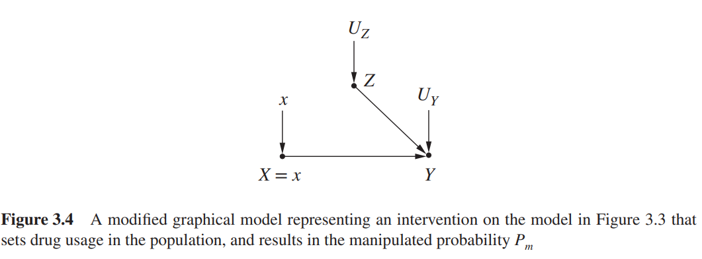
把这张图称为受控模型(manipulated model)，受控模型中出现的概率用\(P_m(*)\)表示（原来的因果DAG中出现的概率用\(P(*)\)表示）。考虑更一般的情况，如何计算\(P(Y=y|do(X=x))\). 由于\(X\)受控后成为孤儿节点，则有\(P(Y=y|do(X=x))= P_m(Y=y|X=x)\)，因为\(X\)与\(Z\)在受控模型中独立，则有 \[ \begin{aligned} P_m(Y=y|X=x)&=\frac{P_m(Y=y,X=x)}{P_m(X=x)}=\sum_{z}\frac{P_m(Y=y,X=x,Z=z)}{P_m(X=x)}\\ &=\sum_{z}\frac{P_m(Y=y,X=x,Z=z)P_m(X=x,Z=z)}{P_m(X=x)P_m(X=x,Z=z)}\\ &=\sum_{z}P_m(Y=y|X=x,Z=z)P_m(Z=z|X=x)\\ &=\sum_{z}P_m(Y=y|X=x,Z=z)P_m(Z=z) \end{aligned} \] 现在\(do\)算子已经被消去，受控模型的使命到此为止。因为在原来的因果DAG与受控模型中，\(Y\)与变量\(X,Z\)的因果关系是相同的，即均有\(Y=f(X,Z,U_Y)\)，因此\(P_m(Y=y|X=x,Z=z)=P(Y=y|X=x,Z=z)\), \(Z\)在两图中均是因，即均有\(Z=g(U_Z)\), 因此\(P_m(Z=z)=P(Z=z)\). (在受控模型里只有\(X\)的函数关系被改变，在原来的因果DAG中，\(X=h(Z,U_X)\)，在受控模型中，\(X=h_m(U_X)\) )。于是有 \[ P(Y=y|do(X=x))=\sum_{z}P(Y=y|X=x,Z=z)P(Z=z) \] 上式即为在\(X\)受控时关于\(Z\)的校正公式。
现在考虑Simpson问题，设\(X\): 使用药物，\(Y\): 治愈，\(Z\): 性别，则因果DAG如平均因果作用一节所示。 \[ \begin{aligned} P(Y=1|do(X=1))&=P(Y=1|X=1,Z=men)P(Z=men)+P(Y=1|X=1,Z=women)P(Z=women)\\ &=0.93\times \frac{87+270}{700}+0.73\times \frac{263+80}{700}=0.832\\ P(Y=1|do(X=0))&=P(Y=1|X=0,Z=men)P(Z=men)+P(Y=1|X=0,Z=women)P(Z=women)\\ &=0.87\times \frac{87+270}{700}+0.69\times \frac{263+80}{700}=0.7818 \end{aligned} \] 于是\(X\)对\(Y=1\)的平均因果作用为 \[ ACE=P(Y=1|do(X=1))-P(Y=0|do(X=1))=0.0502 \]
因果作用定理(Causal Effect Rule)
校正公式给出了一种情况下的\(do\)算子消去计算方式，而对于更一般的情况，同样借助受控模型，在受控模型中，有两种节点与\(X\)独立，一种是原本就与\(X\)独立的，另一种是\(X\)的父节点\(PA(X)\). 对于前一种情况，如果\(Z\)与\(X\)独立，也就是因果关系为\(X\rightarrow Y \leftarrow Z\)，那么原来的DAG和受控模型相同，有\(P(Y|do(X=x))=P_m(Y|X=x)=P(Y|X=x)=\sum_{z}P(Y|X=x,Z=z)P(Z=z)\). 这说明了为什么下面的推导无需引入受控模型中所有与\(X\)独立的变量。当只引入\(X\)的父节点时，与贝叶斯网络的计算保持一致。 \[ \begin{aligned} P(Y=y|do(X=x))&=\frac{P_m(Y=y,X=x)}{P_m(X=x)}\\ &=\sum_{z}\frac{P_m(Y=y,X=x,PA(X)=z)}{P_m(X=x)}\\ &=\sum_{z}\frac{P_m(Y=y,X=x,PA(X)=z)P_m(X=x,PA(X)=z)}{P_m(X=x)P_m(X=x,PA(X)=z)}\\ &=\sum_{z}P_m(Y=y|X=x,PA(X)=z)P_m(PA(X)=z|X=x)\\ &=\sum_z P(Y=y|X=x,PA(X)=z)P(PA(X)=z)\\ &=\sum_z \frac{P(X=x,Y=y,PA(X)=z)}{P(X=x|PA(X)=z)} \end{aligned}\tag{2} \]
后门准则(Backdoor Criterion)
观察上式的推导过程，核心点是：\(P_m(Y=y|X=x,PA(X)=z)=P(Y=y|X=x,PA(X)=z)\),\(P_m(PA(X)=z|X=x)=P_m(PA(X)=z)=P(PA(X)=z)\),
第一个等式成立的条件是在原来DAG和受控模型中，固定\(X,PA(X)\)后\(Y\)的概率分布相同，因为受控模型只消除了\(X\)的入边，因此\(X,Y\)之间存在的共因节点的值固定后，\(Y\)的取值将只受\(X\)和与\(X\)独立的节点影响。例如，假设存在如下因果关系：
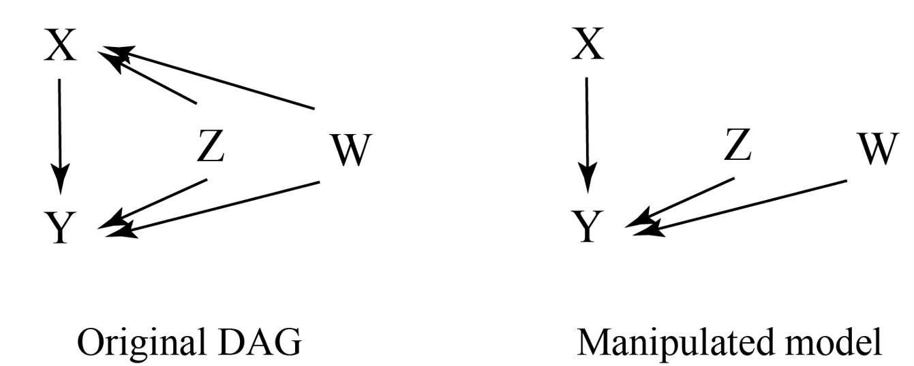
有 \[ \begin{aligned} P(Y=y|X=x,Z=z)&=\frac{P(Y=y,X=x,Z=z)}{P(X=x,Z=z)}\\ &=\frac{P(f(X,Z,W,U_Y)=y,X=x,Z=z)}{P(X=x,Z=z)}\\ &=\frac{P(W=u_w,U_Y=u_y,X=x,Z=z)}{P(X=x,Z=z)} \end{aligned}\tag{3} \] 其中\(u_w,u_y\)是所有满足\(f(x,z,W,U_Y)=y\)的\(W,U_Y\)取值的集合，因为\(W\)与\(X\)不独立，所以不能得到\(P(W=u_w,U_Y=u_y,X=x,Z=z)=P(W=u_w)P(U_Y=u_y)P(X=x,Z=z)\)，而 \[ \begin{aligned} P_m(Y=y|X=x,Z=z)&=\frac{P_m(X=x,Z=z,W=u_w,U_Y=u_y)}{P_m(X=x,Z=z)}\\ &=\frac{P_m(X=x)P_m(Z=z)P_m(W=u_w)P_m(U_Y=u_y)}{P_m(X=x)P_m(Z=z)}\\ &=P_m(W=u_w)P_m(U_Y=u_y)\end{aligned}\tag{4} \] 观察(3)(4)的区别，可见如果(3)式想要消去分母，就要让\(W,X,Z\)同时被消去，即可以得到 \[ \begin{aligned} P(Y=y|X=x,Z=z,W=w)&=\frac{P(W=w,U_Y=u_y,X=x,Z=z)}{P(X=x,Z=z,W=w)}\\ &=P(U_Y=u_y) \end{aligned} \] 另一方面 \[ \begin{aligned} P_m(Y=y|X=x,Z=z,W=w)&=\frac{P_m(X=x,Z=z,W=w,U_Y=u_y)}{P_m(X=x,Z=z,W=w)}\\ &=P_m(U_Y=u_y)\\ &=P(Y=y|X=x,Z=z,W=w) \end{aligned} \] 因此，只有把所有的共因节点的值全部固定，才能得到\(P_m(Y=y|X=x,Z=z,W=w)=P(Y=y|X=x,Z=z,W=w)\).
第二个等式成立的条件是受控模型中，\(PA(X)\)与\(X\)独立。那么，对于受控模型中任何与\(X\)独立的节点的集合都可以替换上面推导的\(PA(X)\). 因此，当\(X\)的父节点难以找出时，根据上面的两个条件，就可以找到替换父节点作为计算的节点，并且得到相同的结果。这称为后门准则，如(5)式。 \[ P(Y=y|do(X=x))=\sum_zP(Y=y|X=x,W=w)P(W=w)\tag{5} \] 这样的节点集合\(W\)满足以下两个条件：
- \(W\)不在\(X\)的后代节点中；
- \(W\)阻断了\(X\)与\(Y\)之间指向\(X\)的路径
这两个条件与上面的推导得到的结论是等价的，即：1.\(W\)包含了所有共因节点； 2.受控模型中\(X\)与\(W\)中的节点独立。